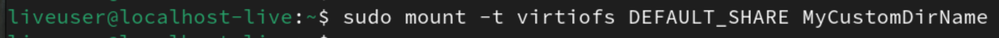

How to access the shared folder
IMPORTANT: On Linux unfortunately it is required to perform a couple of steps before using the shared directory that VirtHandler set up for you earlier. It is definitely not a hard process I would say, let's go through it together!
- Open a terminal prompt and create a new directory, replacing MyCustomDirName with the name you want for this new folder

- Input this command, replacing MyCustomDirName with the name you chose for the folder that has been just created

And that's it, now you can access MyCustomDirName and share content with your mac operating system!

How to use Rosetta 2 in Linux
Rosetta 2 is enabled by default with every Linux virtual machine on VirtHandler, but unfortunately it takes some more steps to get it configured and functional. Don't worry though, we'll go through it together!
WARNING: This procedure requires the "update-binfmts" command. The installation will not be the same depending on the Linux distribution you choose. For Debian and derivatives it is: "sudo apt install update-binfmts"
- First, we want to create a new temporary mountpoint
mkdir /tmp/mountpoint - Now we mount Rosetta 2 shared directory with this command
sudo mount -t virtiofs ROSETTA_SHARE /tmp/mountpoint - Let's check if everything went well! This command should have some output
ls /tmp/mountpoint rosetta - Next, we use this command to install Rosetta
sudo /usr/sbin/update-binfmts --install rosetta /tmp/mountpoint/rosetta \ --magic "\x7fELF\x02\x01\x01\x00\x00\x00\x00\x00\x00\x00\x00\x00\x02\x00\x3e\x00" \ --mask "\xff\xff\xff\xff\xff\xfe\xfe\x00\xff\xff\xff\xff\xff\xff\xff\xff\xfe\xff\xff\xff" \ --credentials yes --preserve yes --fix-binary yes